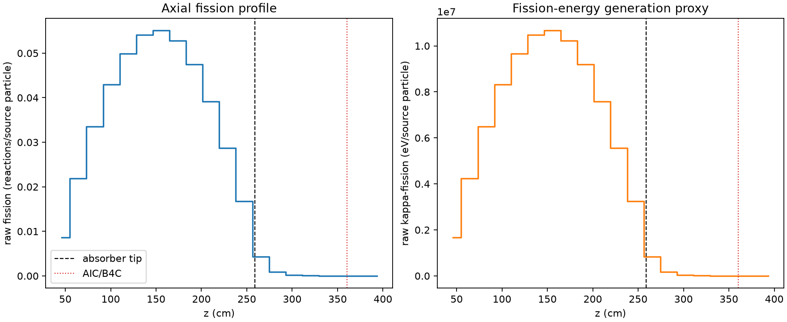
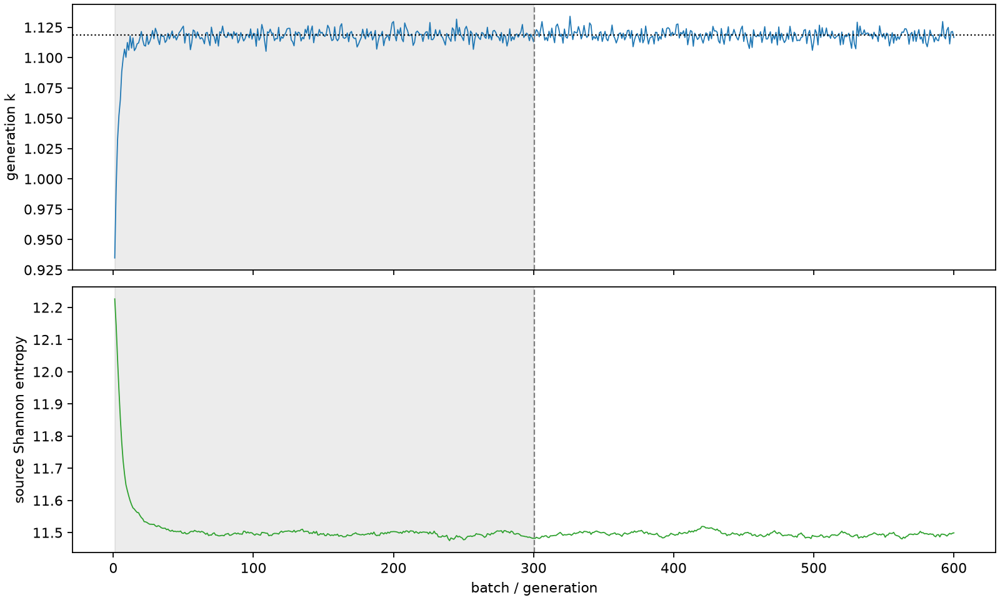

| field | value |
|---|---|
| experiment | V2-STAGE_128_OGRENCI_04-0018 |
| k | 1.1184454673696635 |
| MC standard error | 0.00016936946189214766 |
| seconds | 1023.735345426001 |
| acceptance | not_assessed |
| convergence | review_required |
Completed is output integrity only; physical and statistical review required. Zero tallies do not prove zero production or zero uncertainty.
| diagnostic | value |
|---|---|
| geometric fuel voxels | 5280 |
| zero fission tally voxels | 249 |
| low signal fuel voxels | 1233 |
| low signal fission share | 8.967303738655949e-05 |
| low signal kappa share | 8.972030386860652e-05 |
| important fission share | 0.9501239528670664 |
| previous filter included | 4047 |
| duration estimate s | 1562.5173488400023 |
| actual minus estimate s | -538.7820034140013 |
| fission relative MC error | statistics |
|---|---|
| all_geometric_fuel | {"voxels": 5280, "positive_mean_voxels": 5031, "zero_mean_voxels": 249, "undefined_relative_error_voxels": 249, "median": 0.010456127114829579, "p95": 0.8032449675173639, "maximum": 1.0000000000000002} |
| low_signal | {"voxels": 1233, "positive_mean_voxels": 984, "zero_mean_voxels": 249, "undefined_relative_error_voxels": 249, "median": 0.5391847753841746, "p95": 1.0, "maximum": 1.0000000000000002} |
| important_95pct | {"voxels": 2763, "positive_mean_voxels": 2763, "zero_mean_voxels": 0, "undefined_relative_error_voxels": 0, "median": 0.0073484575753618156, "p95": 0.011194847439477698, "maximum": 0.012821383262433978} |
| outside_previous_filter | {"voxels": 1233, "positive_mean_voxels": 984, "zero_mean_voxels": 249, "undefined_relative_error_voxels": 249, "median": 0.5391847753841746, "p95": 1.0, "maximum": 1.0000000000000002} |
| kappa_fission relative MC error | statistics |
|---|---|
| all_geometric_fuel | {"voxels": 5280, "positive_mean_voxels": 5031, "zero_mean_voxels": 249, "undefined_relative_error_voxels": 249, "median": 0.010444314844701959, "p95": 0.8043177768745986, "maximum": 1.0000000000000002} |
| low_signal | {"voxels": 1233, "positive_mean_voxels": 984, "zero_mean_voxels": 249, "undefined_relative_error_voxels": 249, "median": 0.5396664563680439, "p95": 1.0, "maximum": 1.0000000000000002} |
| important_95pct | {"voxels": 2763, "positive_mean_voxels": 2763, "zero_mean_voxels": 0, "undefined_relative_error_voxels": 0, "median": 0.007338915462328521, "p95": 0.011180970797238204, "maximum": 0.012807712616168289} |
| outside_previous_filter | {"voxels": 1233, "positive_mean_voxels": 984, "zero_mean_voxels": 249, "undefined_relative_error_voxels": 249, "median": 0.5396664563680439, "p95": 1.0, "maximum": 1.0000000000000002} |
| axial bin | fission share | kappa-fission share |
|---|---|---|
| 1 | 0.018970814060860798 | 0.018971712575997536 |
| 2 | 0.04791916477515374 | 0.04791900923100407 |
| 3 | 0.07340117072668126 | 0.07340073051289572 |
| 4 | 0.09411762344432904 | 0.09411718753016676 |
| 5 | 0.10935180914506218 | 0.10935143230221445 |
| 6 | 0.11859864733283045 | 0.11859801983900956 |
| 7 | 0.12067733692671066 | 0.12067684231689915 |
| 8 | 0.11572453887290514 | 0.11572385306829347 |
| 9 | 0.10407967721359623 | 0.10407911267796609 |
| 10 | 0.0857428717593916 | 0.08574257060536027 |
| 11 | 0.06298324706423745 | 0.06298281954443516 |
| 12 | 0.03664942670797111 | 0.03664932431281604 |
| 13 | 0.009393388028387198 | 0.009396058530930645 |
| 14 | 0.0018503154376101887 | 0.001851115492109972 |
| 15 | 0.0004197702090565408 | 0.000419949446089596 |
| 16 | 9.111823863317746e-05 | 9.116556805165359e-05 |
| 17 | 2.1480848341273475e-05 | 2.149315430322443e-05 |
| 18 | 6.555132393104001e-06 | 6.558250476780995e-06 |
| 19 | 7.291889537324687e-07 | 7.302301388527777e-07 |
| 20 | 3.148868949570752e-07 | 3.1481084100924884e-07 |
Histories include the inactive-to-active transition at batch 300. kappa-fission approximates fission energy production, not total heat deposition.

